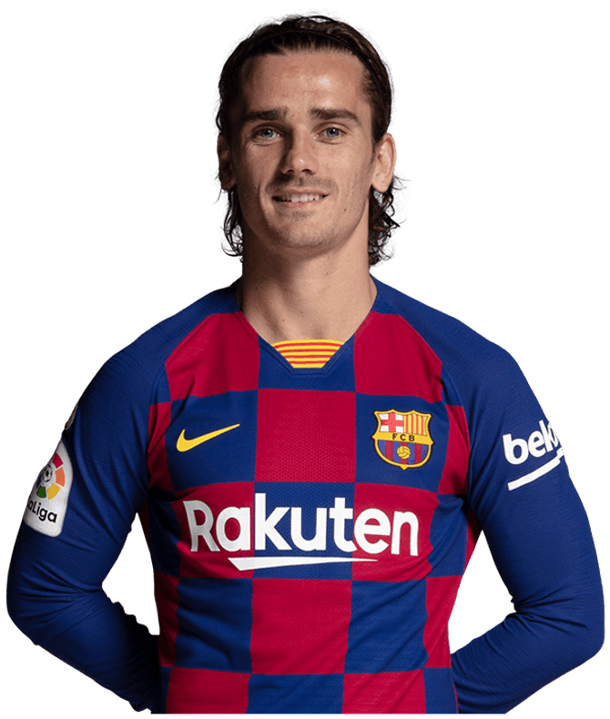

Antoine Griezmann (French pronunciation: [ɑ̃twan ɡʁijɛzman];[4] born 21 March 1991) is a French professional footballer who plays as a forward for Spanish club Barcelona and the France national team.
Born and raised in France, Griezmann began his senior career with Real Sociedad in 2009, with whom he won the Segunda División title in his first season. In 2014, he joined Atlético Madrid for a then-club record €30 million, where he broke the club's scoring record for a debut season and was named in the 2014–15 La Liga Team of the Season. He was voted La Liga Best Player in 2016, and finished third for the 2016 Ballon d'Or and 2016 Best FIFA Men's Player.[5] He finished third and sixth respectively for the awards in 2018,[6] as he helped Atlético Madrid win the UEFA Europa League, scoring twice in the final. Griezmann also won the 2014 Supercopa de España and 2018 UEFA Super Cup, and ranks as the club's fifth-highest goalscorer.[7] In 2019, Griezmann signed for league rivals Barcelona in a transfer worth €120 million, becoming the joint-fourth most expensive footballer ever.[8]
At international level, Griezmann won the 2010 UEFA European Under-19 Championship, and made his senior debut for France in 2014, at age 23, and has appeared in four major tournaments. He finished as top goalscorer and voted as Player of the Tournament as France finished runner-up at UEFA Euro 2016. Griezmann won the Silver Boot as the second highest goalscorer at the 2018 FIFA World Cup as France won the tournament. He also won the Bronze Ball as the third best player, and was named Man of the Match after scoring a penalty in the final.
